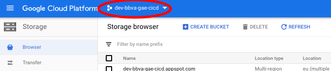

Consola Google Cloud (NUBE)
Cloud Storage
Vamos a crear el bucket o segmento en Google Cloud Storage que será el espacio donde se guarden las imágenes y archivos de la aplicación.
Para ello en la consola de Google Cloud buscamos el apartado Storage y procedemos a crear el segmento cuyo nombre será nuestro uid. Este nombre de segmento luego tendremos que configurarlo en nuestra aplicación.
El resto de los valores que aparecen los dejaremos con los valores propuestos por defecto por Google.
Debemos asegurarnos de que en la consola tenemos seleccionado nuestro proyecto dev-bbva-gae-cicd que es sobre el que vamos a trabajar. En caso de no estar seleccionado seleccionarlo buscando en dev.bbva.com dentro de la ventana que salga.
